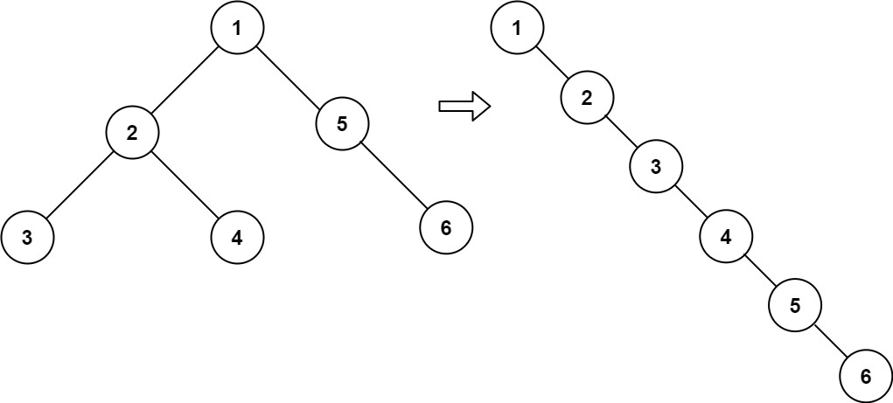

| Category | Difficulty | Likes | Dislikes |
|---|---|---|---|
| Algorithms | Medium | 13440 | 596 |
linked-list | stack | tree | depth-first-search | binary-tree
google | facebook | amazon | bloomberg | microsoft | oracle | yahoo | anduril
Given the root of a binary tree, flatten the tree into a "linked list":
TreeNode class where the right child pointer points to the next node in the list and the left child pointer is always null.
Example 1:

Input: root = [1,2,5,3,4,null,6]
Output: [1,null,2,null,3,null,4,null,5,null,6]Example 2:
Input: root = []
Output: []Example 3:
Input: root = [0]
Output: [0]
Constraints:
[0, 2000].-100 <= Node.val <= 100Follow up: Can you flatten the tree in-place (with
O(1) extra space)?